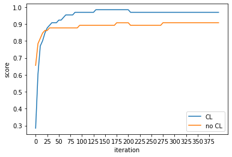

Toward Trainability of Deep Quantum Neural Networks#
[2112.15002] Toward Trainability of Deep Quantum Neural Networksのscikit-qulacs実装例です。
インポート#
scikit-qulacsのQNNClassifierとcreate_dqn_clをインポートします。numpyやmatplotlib.pyplot等も併せてインポートします。
import csv
from typing import Tuple
import numpy as np
from qulacs import Observable
from sklearn.metrics import f1_score
from sklearn.model_selection import train_test_split
from skqulacs.circuit.pre_defined import create_dqn_cl, create_dqn_cl_no_cz
from skqulacs.qnn.classifier import QNNClassifier
from skqulacs.qnn.solver import Adam
テストデータの生成#
UCI Machine Learning Repositoryを使用してテストデータを生成します。
# Use wine dataset retrieved from: https://archive-beta.ics.uci.edu/ml/datasets/wine
def load_dataset(
file_path: str, ignore_kind: int, test_ratio: float
) -> Tuple[np.array, np.array, np.array, np.array]:
"""Load dataset from specified path.
Args:
file_path: File path from which data is loaded.
ignore_kind: The dataset expected to have 3 classes and we need 2 classes to test. So specify here which class to ignore in loading.
"""
x = []
y = []
with open(file_path) as f:
reader = csv.reader(f)
for row in reader:
kind = int(row[0])
if kind == ignore_kind:
continue
y.append(kind)
x.append([float(feature) for feature in row[1:]])
x_train, x_test, y_train, y_test = train_test_split(
x, y, test_size=test_ratio, shuffle=True
)
return x_train, x_test, y_train, y_test
分類回路の作成#
QNNClassifierを使用して分類回路を作成します。
第一引数に回路を指定します。第二引数に分類数を指定します。ここでは二値問題のため2を指定してください。
第三引数に探索アルゴリズムを指定します。Adamを指定してください。
create_classifier()の第一引数は量子ビット数を指定してください。第二引数に学習用回路を指定してください。
学習用回路はこの後作成します。
def create_classifier(n_features, circuit):
# Observables are hard-coded in QNNClassifier, so overwrite here.
classifier = QNNClassifier(circuit, 2, Adam())
classifier.observables = [Observable(n_features) for _ in range(n_features)]
for i in range(n_features):
if i < locality:
classifier.observables[i].add_operator(1.0, f"Z {i}")
else:
classifier.observables[i].add_operator(1.0, f"I {i}")
return classifier
実行#
load_dataset()を呼び出してテストデータを生成します。
create_dqn_cl()で学習用回路を作成し、create_classifier()に渡して、分類回路を作成します。
qcl.fit()を実行し学習を行います。
qcl.predict()で推論を行います。
sklearn.metricsのf1_scoreを使用して結果の精度を計算します。
x_train, x_test, y_train, y_test = load_dataset("../../../datasets/wine.data", 3, 0.5)
for i in range(len(y_train)):
y_train[i] -= 1
for i in range(len(y_test)):
y_test[i] -= 1
n_features = 13
locality = 2
maxiter = 5
print("CL")
circuit = create_dqn_cl(n_features, 5, locality)
classifier = create_classifier(n_features, circuit)
result_cl = []
loop_size = 80
for i in range(loop_size):
classifier.fit(np.array(x_train), np.array(y_train), maxiter)
y_pred = classifier.predict(np.array(x_test))
score = f1_score(y_test, y_pred, average="weighted")
result_cl.append(score)
print("iteration:", (i + 1) * maxiter, " score:", score)
print("no CL")
circuit = create_dqn_cl_no_cz(n_features, 5)
classifier = create_classifier(n_features, circuit)
result_no_cl = []
for i in range(loop_size):
classifier.fit(np.array(x_train), np.array(y_train), maxiter)
y_pred = classifier.predict(np.array(x_test))
score = f1_score(y_test, y_pred, average="weighted")
result_no_cl.append(score)
print("iteration:", (i + 1) * maxiter, " score:", score)
CL
iteration: 5 score: 0.28481262327416174
iteration: 10 score: 0.6028136727487844
iteration: 15 score: 0.770327320576786
iteration: 20 score: 0.8008593936500358
iteration: 25 score: 0.8466696139109934
iteration: 30 score: 0.8773356911287946
iteration: 35 score: 0.8925147431275766
iteration: 40 score: 0.9080017683465961
iteration: 45 score: 0.9080017683465961
iteration: 50 score: 0.9080017683465961
iteration: 55 score: 0.9234074590961676
iteration: 60 score: 0.9234074590961676
iteration: 65 score: 0.9386678455643973
iteration: 70 score: 0.9539348899118185
iteration: 75 score: 0.9539348899118185
iteration: 80 score: 0.9539348899118185
iteration: 85 score: 0.9539348899118185
iteration: 90 score: 0.9693339227821987
iteration: 95 score: 0.9693339227821987
iteration: 100 score: 0.9693339227821987
iteration: 105 score: 0.9693339227821987
iteration: 110 score: 0.9693339227821987
iteration: 115 score: 0.9693339227821987
iteration: 120 score: 0.9693339227821987
iteration: 125 score: 0.9693339227821987
iteration: 130 score: 0.9693339227821987
iteration: 135 score: 0.9846449633039395
iteration: 140 score: 0.9846449633039395
iteration: 145 score: 0.9846449633039395
iteration: 150 score: 0.9846449633039395
iteration: 155 score: 0.9846449633039395
iteration: 160 score: 0.9846449633039395
iteration: 165 score: 0.9846449633039395
iteration: 170 score: 0.9846449633039395
iteration: 175 score: 0.9846449633039395
iteration: 180 score: 0.9846449633039395
iteration: 185 score: 0.9846449633039395
iteration: 190 score: 0.9846449633039395
iteration: 195 score: 0.9846449633039395
iteration: 200 score: 0.9846449633039395
iteration: 205 score: 0.9846449633039395
iteration: 210 score: 0.9693339227821987
iteration: 215 score: 0.9693339227821987
iteration: 220 score: 0.9693339227821987
iteration: 225 score: 0.9693339227821987
iteration: 230 score: 0.9693339227821987
iteration: 235 score: 0.9693339227821987
iteration: 240 score: 0.9693339227821987
iteration: 245 score: 0.9693339227821987
iteration: 250 score: 0.9693339227821987
iteration: 255 score: 0.9693339227821987
iteration: 260 score: 0.9693339227821987
iteration: 265 score: 0.9693339227821987
iteration: 270 score: 0.9693339227821987
iteration: 275 score: 0.9693339227821987
iteration: 280 score: 0.9693339227821987
iteration: 285 score: 0.9693339227821987
iteration: 290 score: 0.9693339227821987
iteration: 295 score: 0.9693339227821987
iteration: 300 score: 0.9693339227821987
iteration: 305 score: 0.9693339227821987
iteration: 310 score: 0.9693339227821987
iteration: 315 score: 0.9693339227821987
iteration: 320 score: 0.9693339227821987
iteration: 325 score: 0.9693339227821987
iteration: 330 score: 0.9693339227821987
iteration: 335 score: 0.9693339227821987
iteration: 340 score: 0.9693339227821987
iteration: 345 score: 0.9693339227821987
iteration: 350 score: 0.9693339227821987
iteration: 355 score: 0.9693339227821987
iteration: 360 score: 0.9693339227821987
iteration: 365 score: 0.9693339227821987
iteration: 370 score: 0.9693339227821987
iteration: 375 score: 0.9693339227821987
iteration: 380 score: 0.9693339227821987
iteration: 385 score: 0.9693339227821987
iteration: 390 score: 0.9693339227821987
iteration: 395 score: 0.9693339227821987
iteration: 400 score: 0.9693339227821987
no CL
iteration: 5 score: 0.6558974358974359
iteration: 10 score: 0.7841054778554779
iteration: 15 score: 0.8157342657342658
iteration: 20 score: 0.8468106845715954
iteration: 25 score: 0.8621334263731016
iteration: 30 score: 0.8621334263731016
iteration: 35 score: 0.8773356911287946
iteration: 40 score: 0.8773356911287946
iteration: 45 score: 0.8773356911287946
iteration: 50 score: 0.8773356911287946
iteration: 55 score: 0.8773356911287946
iteration: 60 score: 0.8773356911287946
iteration: 65 score: 0.8773356911287946
iteration: 70 score: 0.8773356911287946
iteration: 75 score: 0.8773356911287946
iteration: 80 score: 0.8773356911287946
iteration: 85 score: 0.8773356911287946
iteration: 90 score: 0.8773356911287946
iteration: 95 score: 0.8773356911287946
iteration: 100 score: 0.8925147431275766
iteration: 105 score: 0.8925147431275766
iteration: 110 score: 0.8925147431275766
iteration: 115 score: 0.8925147431275766
iteration: 120 score: 0.8925147431275766
iteration: 125 score: 0.8925147431275766
iteration: 130 score: 0.8925147431275766
iteration: 135 score: 0.8925147431275766
iteration: 140 score: 0.8925147431275766
iteration: 145 score: 0.8925147431275766
iteration: 150 score: 0.8925147431275766
iteration: 155 score: 0.8925147431275766
iteration: 160 score: 0.8925147431275766
iteration: 165 score: 0.8925147431275766
iteration: 170 score: 0.8925147431275766
iteration: 175 score: 0.8925147431275766
iteration: 180 score: 0.9076923076923077
iteration: 185 score: 0.9076923076923077
iteration: 190 score: 0.9076923076923077
iteration: 195 score: 0.9076923076923077
iteration: 200 score: 0.9076923076923077
iteration: 205 score: 0.9076923076923077
iteration: 210 score: 0.8925147431275766
iteration: 215 score: 0.8925147431275766
iteration: 220 score: 0.8925147431275766
iteration: 225 score: 0.8925147431275766
iteration: 230 score: 0.8925147431275766
iteration: 235 score: 0.8925147431275766
iteration: 240 score: 0.8925147431275766
iteration: 245 score: 0.8925147431275766
iteration: 250 score: 0.8925147431275766
iteration: 255 score: 0.8925147431275766
iteration: 260 score: 0.8925147431275766
iteration: 265 score: 0.8925147431275766
iteration: 270 score: 0.8925147431275766
iteration: 275 score: 0.8925147431275766
iteration: 280 score: 0.9080017683465961
iteration: 285 score: 0.9080017683465961
iteration: 290 score: 0.9080017683465961
iteration: 295 score: 0.9080017683465961
iteration: 300 score: 0.9080017683465961
iteration: 305 score: 0.9080017683465961
iteration: 310 score: 0.9080017683465961
iteration: 315 score: 0.9080017683465961
iteration: 320 score: 0.9080017683465961
iteration: 325 score: 0.9080017683465961
iteration: 330 score: 0.9080017683465961
iteration: 335 score: 0.9080017683465961
iteration: 340 score: 0.9080017683465961
iteration: 345 score: 0.9080017683465961
iteration: 350 score: 0.9080017683465961
iteration: 355 score: 0.9080017683465961
iteration: 360 score: 0.9080017683465961
iteration: 365 score: 0.9080017683465961
iteration: 370 score: 0.9080017683465961
iteration: 375 score: 0.9080017683465961
iteration: 380 score: 0.9080017683465961
iteration: 385 score: 0.9080017683465961
iteration: 390 score: 0.9080017683465961
iteration: 395 score: 0.9080017683465961
iteration: 400 score: 0.9080017683465961
import matplotlib.pyplot as plt
plt.plot(np.arange(0, loop_size*maxiter, step=maxiter), np.array(result_cl).flatten(), label="CL")
plt.plot(np.arange(0, loop_size*maxiter, step=maxiter), np.array(result_no_cl).flatten(), label="no CL")
plt.xticks(np.arange(0, loop_size*maxiter, step=25))
plt.xlabel("iteration")
plt.ylabel("score")
plt.legend()
plt.show()

CLレイヤをつけた回路の方が速く学習が進みます。